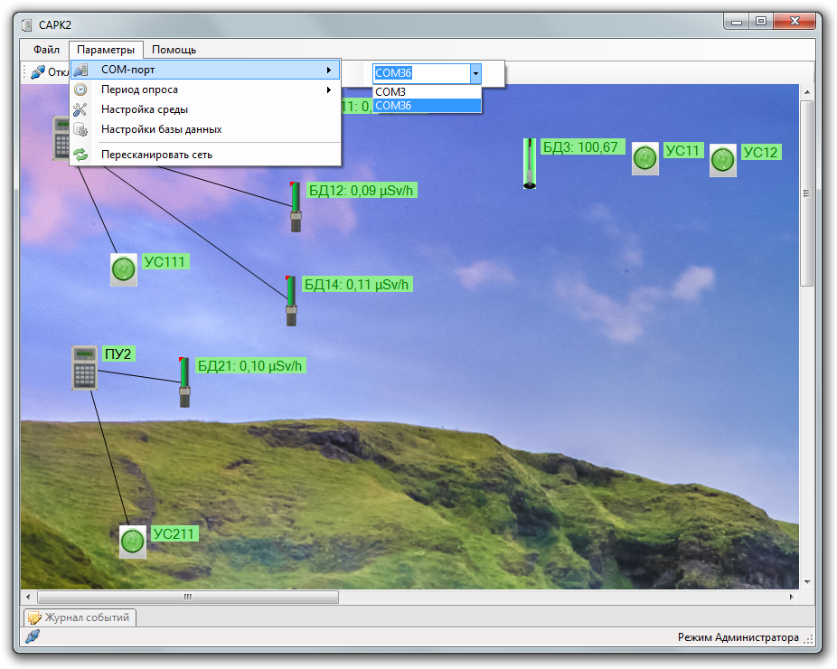
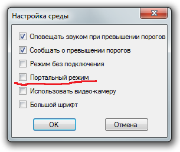
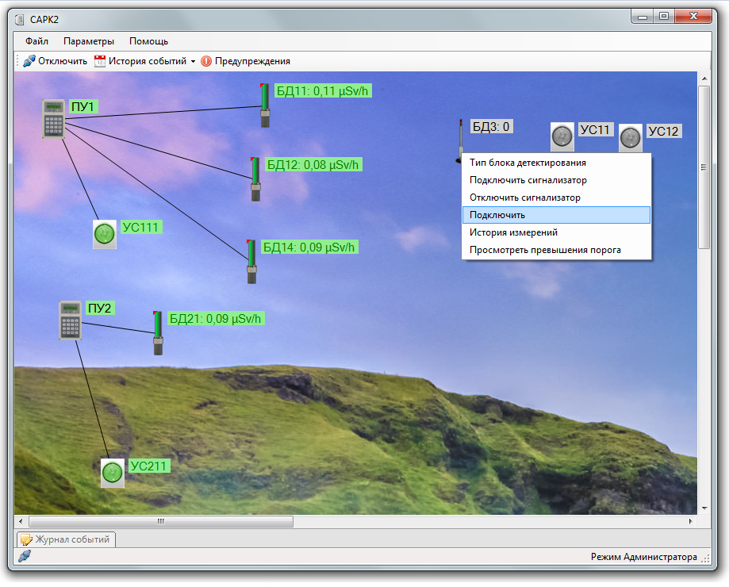

SARK2 и МРП
- При запуске программы выбрать СОМ порт
- Выбрать период опроса (0,2 - 1 сек)
- Нажать "Подключить"
- Чтобы были видны связи между элементами, необходимо добавить какой-нибудь рисунок (Файл → ткрыть
схему)

Все элементы обязательно должны подсвечиваться зеленым цветом, т.е. быть активными!
- Если МРП неактивна:
- Выбрать тип детектора (через контекстное меню), для МРП тип блока — УРК
- Убедиться, что ВЫКЛЮЧЕНА настройка "Портальный режим" (Параметры →
настройка среды)

- Убедиться, что у МРП нет ошибок, для устранения сбросить историю (через SARKtech) перезаписать номера,
пороги и т.д.
- Если после перезагрузки программы/системы ранее активная МРП стала неактивной и сама не активируется,
попробовать выбрать в контекстном меню "Подключить"
- Если ничего не помогло — пересканировать сеть
- Если есть неактивная УС, это значит, что эта УС не подключена ни к одному БД. Чтобы подключить:
- На изображении БД, к которому необходимо подключить УС, в контекстном меню выбрать пункт "Подключить
сигнализатор"

- Затем кликнуть на изображение УС, которую необходимо подключить
- изображение УС станет зеленым, а реальная УС перестанет мигать и будет гореть зеленым
- В момент подключения настоящая УС должна быть неактивной (мигать зеленым)
- Если показания БД не обновляются (нет обмена с системой), проверить, выбран ли период опроса